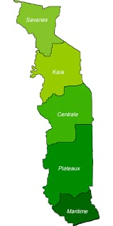

Sauter à la navigationSauter à la recherche Géographie du Togo carte : Géographie du Togo Continent Afrique Région Afrique de l'ouest Coordonnées 8° N, 1° E Superficie 122e rang mondial 56 785 km2 Terres : 95,8 % Eau : 4,2 % Côtes 56 km Frontières Total 1 647 km Ghana 877 km, Bénin 644 km, Burkina Faso 126 km Altitude maximale 986 m (mont Agou) Altitude minimale 0 m (océan Atlantique) Plus long cours d’eau Mono Plus importante étendue d’eau lac Togo modifier Consultez la documentation du modèle Ouvert sur la baie du Bénin dans le golfe de Guinée, le Togo occupe une étroite bande de terre en Afrique de l'ouest, entre le Ghana et le Bénin. Sa plus grande largeur n’est que de 160 km, pour 579 km de longueur.

Forêt classée des Deux Béna (région des plateaux.) Le relief togolais consiste principalement en deux plaines couvertes de savane séparées par la chaîne du Togo, orientée du nord-est au sud-ouest. Le Togo est généralement divisé en six régions géographiques. La côte sableuse est bordée de [tidal flats] et de lagons peu profonds. Les lacs sont nombreux, le plus grand étant le lac Togo. Plus au nord, entre 60 et 90 mètres d’altitude, le plateau du Ouatchi s’étend sur une trentaine de kilomètres. On l’appelle parfois Terre de barre en raison de son sol rougeâtre, riche en fer. Au nord-ouest du plateau du Ouatchi se trouve le bassin du Mono. Les monts Togo traversent le pays au sud-ouest en direction du Ghana, où ils prennent le nom d'Akwapim, et du Bénin, où ils se nomment alors Atakora. Le point culminant du Togo est le mont Agou, à 986 mètres.
Cette section est vide, insuffisamment détaillée ou incomplète. Votre aide est la bienvenue ! Comment faire ? Le principal cours d'eau du Togo est le Mono qui prend sa source dans le massif montagneux de l'Atakora au nord-ouest du Bénin et se jette dans l'Océan Atlantique à Grand-Popo à la frontière entre le Togo et le Bénin. Il est long de 500Km. Un petit barrage hydroélectrique érigé sur son cours à Nangbéto (environ 200Km au nord de Lomé) a amenuisé la quantité d'eau drainée par la partie sud du Mono. Au nord des monts Togo, l’Oti, un des principaux affluents de la Volta, traverse un plateau sableux recouvert de savane.
Cette section est vide, insuffisamment détaillée ou incomplète. Votre aide est la bienvenue ! Comment faire ? L’extrême nord-ouest du Togo, composé de granite et de gneiss, est plus abrupt avec notamment les falaises de Dapaong. Ressources naturelles: phosphates, grès, marbre.
Le climat du Togo est tropical. La moitié sud connaît deux saisons humides par année, une grande saison pluvieuse qui débute d'avril à juin (la mousson) puis la petite saison pluvieuse qui survient de septembre à octobre. Avec 890 millimètres de précipitations annuelles, la côte est la région la plus sèche du pays. Il n’y a qu’une saison des pluies dans la moitié nord du pays, de juin à septembre. Les précipitations moyennes se montent à 1 200 millimètres par année, généralement concentrées sur les quatre mois d’été. L’harmattan se lève régulièrement durant l’hiver. Les variations annuelles de température sont plus faibles au sud (de 23° à 32 °C) qu’au nord (de 18° à 38 °C).
Les informations suivantes sont issues du profil environnemental du Togo cité en référence. Cette section a besoin d'être recyclée (novembre 2014). Une réorganisation et une clarification du contenu sont nécessaires. Améliorez-le ou discutez des points à améliorer.
Le développement du Togo a entraîné une dégradation importante de l’environnement qui se manifeste au niveau :
des sols : 85 % des sols cultivables sont aujourd'hui dégradés physiquement, chimiquement et biologiquement. Limité dans les années 1970 au Sud-Est du Pays, ce phénomène affecte maintenant toutes les zones peuplées. La politique de développement agricole mise en œuvre depuis 1966 en est à l'origine, tout comme l'exploitation minière et le BTP.
de l'eau : si les précipitations, les eaux superficielles ou souterraines sont abondantes, cette ressource est mal gérée et est donc confrontée à une surexploitation, à une pollution agricole, industrielle et domestique des eaux superficielles. Enfin, les aquifères côtiers sont affectés par l’intrusion des eaux marines.
des forêts : la diminution de la fertilité des sols a conduit les agriculteurs à défricher 212 000 ha entre 1992 et 1999. Les zones boisées sont également soumises à une exploitation importante pour produire du bois de chauffage. Cette déforestation entraîne une réduction de la biodiversité, un changement du climat, un envasement des cours d'eau... Le reboisement n'est pas suffisant.
de la biodiversité : le Togo est l'un des points chauds de biodiversité par la présence de la forêt guinéenne de l'Ouest africain. Cependant :
la panthère, l'éland de Derby, le chimpanzé ont probablement disparu ;
le lion, le lycaon, le bongo, la sitatunga, le cercopithèque diane, le colobe bai, le colobe noir et le blanc d’Afrique de l’Ouest et le lamantin sont fortement menacés de disparition tandis que l’effectif de la population d’éléphants est tombé à un niveau critique.
L’exploitation forestière, les feux de brousse, le défrichement intensif des terres, la pollution de l'eau ainsi que l’exploitation abusive des espèces pour l’alimentation humaine, le trafic d'animaux et le tourisme et la médecine traditionnelle constituent les principales menaces.
Si les parcs, les réserves ont eu un réel impact, la population les a remis en cause au début des années 1990. L’État y remédie désormais en mettant en place une gestion participative de ces aires. des ressources énergétiques : Les 1 500 000 tonnes d'équivalent pétrole de consommation annuelle se répartissent de la manière suivante : 80 % bois ; 16 % produits pétroliers ; 4 % électricité. Les conséquences en sont la pollution de l'air, perte de ressources naturelles, érosion de biodiversité, poids de la facture énergétique... des déchets : les déchets ménagers, les eaux usées ne sont pas gérés, ce qui a des conséquences sanitaires. du climat : La réduction de la surface forestière, la combustion des ressources énergétiques ont une action sur le climat. De 1961 à 2000, la moyenne des températures augmente de 0,5 à 0,8 °C du sud au nord, la pluviométrie diminue de 3,3 mm/an à 2,2 mm/an et le nombre de jours de pluie se réduit de 14.4 jours par an à 10.64 jour par an selon les milieux) tandis que le rapport entre les niveaux de précipitations et d’évapotranspiration se situe en dessous de 0,75 dans plusieurs localités indiquant une nette tendance à l’aridité.